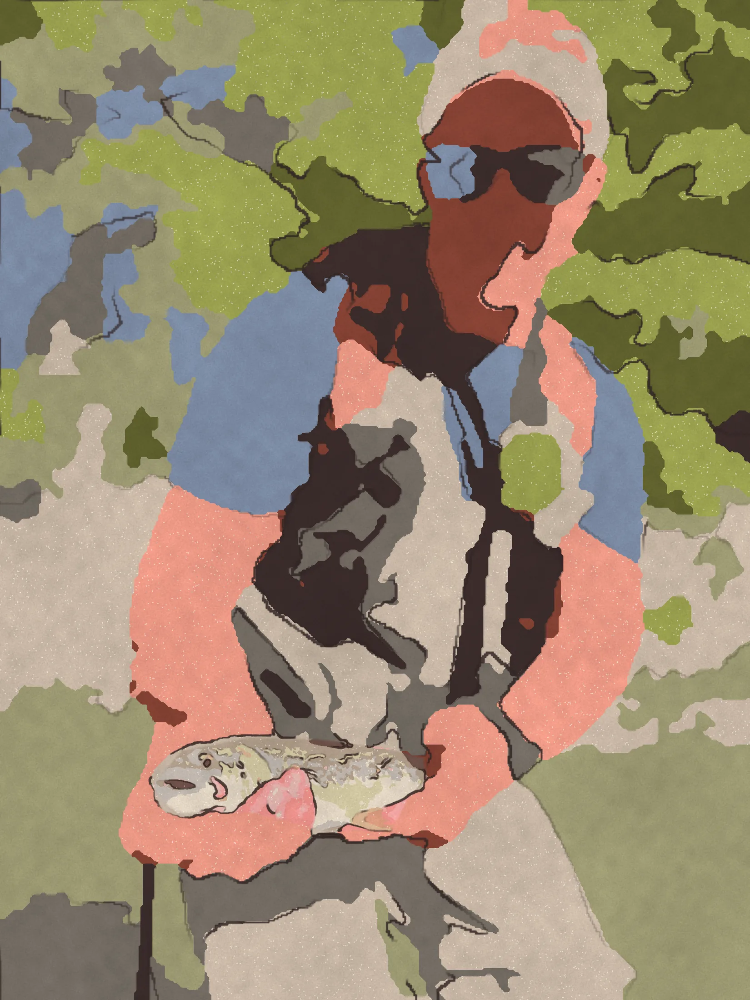

Direction from is true. Distance along each line follows drive time but is spaced for legibility, so read the exact minutes printed against every stop rather than the length of the line. Click any stop for costs, hours, limits, catch reports, flies and kit.

Every day-ticket game and mixed water within ninety minutes, including three reservoirs that quietly stopped being trout water. Worth knowing before you load the car.
Print from your own photographEvery day-ticket game and mixed water within ninety minutes, including the one that restocked on Tuesday. Worth knowing before you load the car.
Print from your own photograph